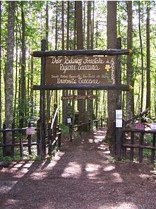
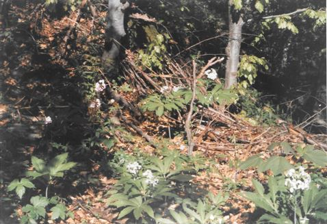
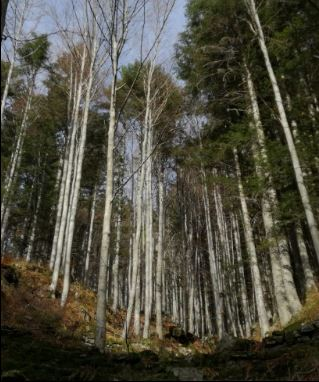
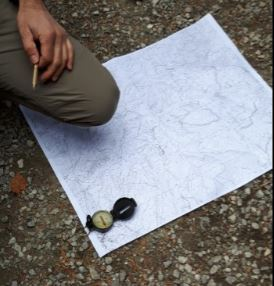
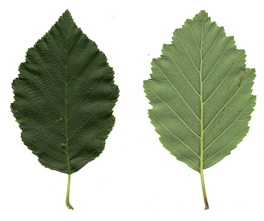

Orto botanico
Situato nell’alta valle del Sestaione, ricopre una piccola superficie che si estende fra i 1280 ed i 1308 m di quota. Accoglie quindi piante d’alta quota tra cui alcune decisamente rare. Il suo spazio è dedicato in gran parte al bosco, una piccola zona è occupata da un giardino su rocce ed è stata ricreata anche una zona umida. Aperto da giugno a settembre. Periodo di massima fioritura vista l’altitudine: Luglio. Fortemente consigliato!

Faggete eutrofiche
La faggeta può essere considerata la foresta CLIMAX della montagna pistoiese ( il tipo di foresta cioè che naturalmente, in assenza di azioni disturbanti di vario tipo, colonizza le nostre montagne sopra una certa altitudine). I boschi di Faggio sono situati ad altitudini in genere superiori ai 700 metri fino a circa 1600. Le faggete che si trovano a quote più basse, in stazioni poco pendenti dove si può formare del suolo di origine colluviale (portato dalle pendici), sono dette EUTROFICHE e sono caratterizzate da alcune piantine di sottobosco come Cardamine heptaphylla, vedi foto, Geranium nodosum, Oxalis acetosella (Foggi, Gennai et al., La carta della vegetazione del SIC Alta Valle del Sestaione, Parlatorea (FI), 2007).

Faggete microterme
Più in alto e su pendici più scoscese vive un altro tipo di faggeta, su suoli più poveri, continuamente consumati dall’acqua che scorre veloce data la forte pendenza. L’abete bianco è più presente ripetto ai boschi di faggio che stanno più in basso e le piantine di sottobosco che caratterizzano questo tipo di faggeta sono spesso felci, la più rappresentativa è Gymnocarpion dryopteris.

Orientamento della carta
Per poter utilizzare una cartina al meglio, occorre che sia orientata. Si utilizza la bussola, mettendola sulla carta e ruotando quest’ultima finché l’ago della bussola, che è sempre disposto lungo l’asse Nord – Sud, coincide con il margine verticale della carta . Questo perché su una carta il nord è disposto sempre in alto: una volta che il nord della bussola coinciderà con quello della carta, la avrai orientata. Attenzione, in montagna bisogna avere degli accorgimenti, è bene avere una carta, una bussola, possibilmente un altimetro. E soprattutto bisogna essere prudenti, consultare il meteo e indossare le scarpe adatte!

Boschetti di ontano bianco
Questi boschetti, che si possono trovare ad altitudini diverse con specie accompagnatrici diverse, sono amanti dell’umidità e si sviluppano negli impluvi e lungo i torrenti, là dove l’apertura dovuta all’alveo fluviale fa penetrare più luce. Nella Valle del Sestaione sono ben rappresentati. La specie predominante è ovviamente Alnus incana, vedi le foglie nella foto, spesso misto al faggio e al frassino comune (Fraxinus excelsior), mentre a quote più basse si accompagna all’orniello (Fraxinus ornus).
Si tratta di un habitat di interesse conservazionistico di valenza prioritaria presente nell’Allegato I della Direttiva Habitat 92/43/CEE, codice Natura 2000 91E0.
Percorso sensoriale: dalla natura alla poesia.
Spesso si confonde il VEDERE con l’ OSSERVARE.
Osservare però vuol dire vedere con gli occhi della mente e del cuore.
Caro escursionista che leggi con passione queste righe, non sottovalutare mai l’arte di interpretare la natura, perché è una delle abilità più complesse, non è semplice riuscire a trasformare il suono del vento in una melodia che culla dolcemente i fluidi movimenti delle foglie tinte dai vivaci colori delle quattro stagioni, saper emozionarsi accarezzando la vecchia corteccia di un albero che ne ha viste di tutti i colori. Per poter veramente diventare tutt’uno con la natura bisogna fermarsi, concentrarsi su quello che ci circonda, sentire i veloci movimenti degli animali che si aggirano furtivi nel bosco, il brivido che scorre sulla schiena, quando i nostri piedi affondano dolcemente nella terra umida.
Chiudere gli occhi, fermarsi per un attimo e aspettare che i suoni, gli odori, i colori invadano i nostri sensi.
Adesso osserva la vita che si muove intorno a te, la storia del luogo in cui ti trovi; pensa che forse la pianta che ora calpesti con i tuoi piedi stanchi è una delle più rare in questo bosco, che l’uccello che ora ti scruta con paura è una delle specie che caratterizzano questa montagna. Senti l’odore del fungo lì accanto a te, sì proprio quello così tenero e carino che magari può ucciderti anche solo dopo un morso o essere semplicemente delizioso. La natura si confonde con la melodia, con il canto che trasforma in poesia ogni nostro sentimento.
Nel 1803, qui nacque una famosa poetessa improvvisatrice, era una donna normale di quel tempo; lei non era andata a scuola, ma ciò che la rendeva speciale era la sua capacità di comporre meravigliose ottave con una tale naturalezza, che stupiva anche il più grande dei poeti. Si chiamava Beatrice di Pian degli Ontani. La conosceremo più avanti nel nostro viaggio.